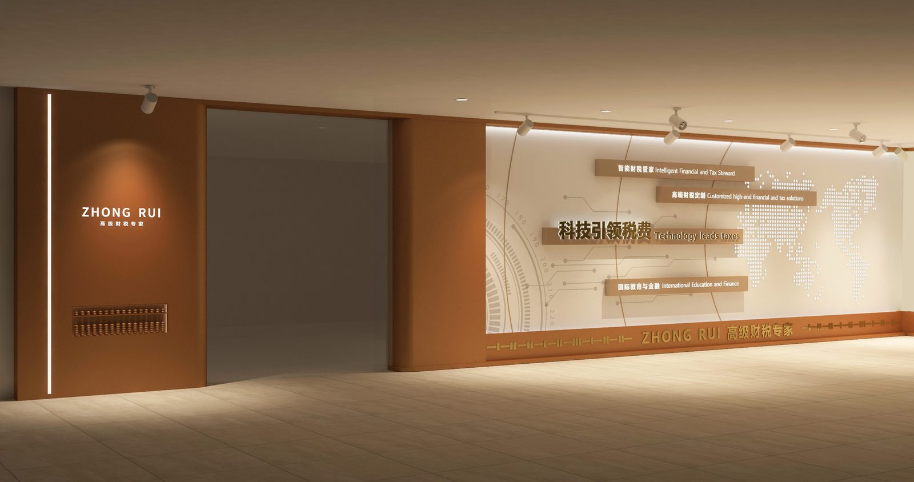
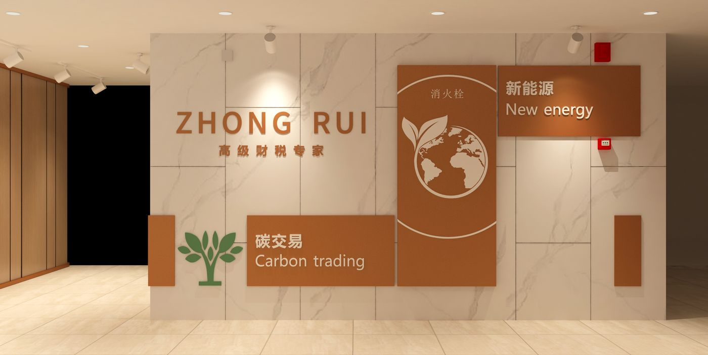
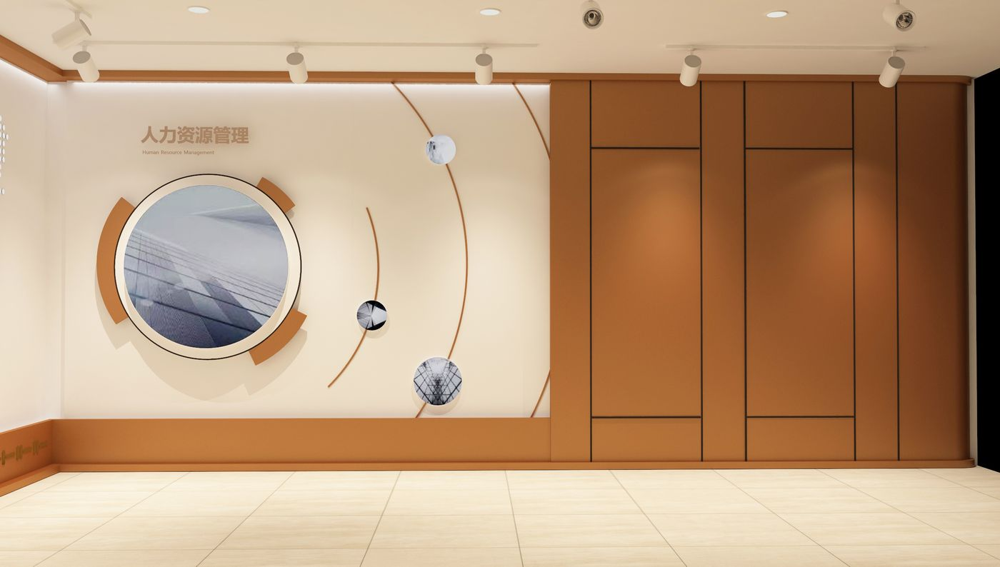

案例研究 / CASE STUDY · 10
SHUIBOSHI
税博士文化墙 · 企业文化墙
CORPORATE CULTURE WALL · TAX & FINANCE
CORPORATE CULTURE WALL · TAX & FINANCE

项目角色 / PROJECT ROLE
以财税专业与女性力量为关键词的企业文化墙设计，<br>通过图文编排与色彩层次，在有限的墙面空间内呈现企业数字化的服务理念与团队文化。
A corporate culture wall built on professionalism and energy — graphic layers and color turning tax & finance into visual narrative.
项目角色 / ROLE
空间设计师
SPATIAL DESIGN
工作范围 / SCOPE
企业文化墙设计 · 图文编排 · 施工落地
Culture wall design · Graphic layout · Construction delivery
02 / 空间呈现
墙面整体 / WALL OVERVIEW
以暖棕与米白统合各功能区墙面，将「高级财税专家」的专业形象转化为可读的视觉系统。

03 / 空间节点
板块节点 / WALL SECTIONS
新能源·碳交易、人力资源等板块以图形与色彩层次清晰区分，兼顾专业性与女性力量表达。

项目总结 / PROJECT SUMMARY
空间是品牌的无声表达，每一面墙都在传递企业的态度。
A wall is a quiet statement — every surface carries the brand.